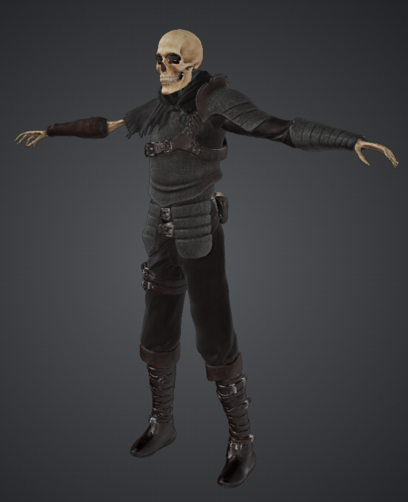

Projects
The studio's portfolio of grim underground fantasy games — current work and what stirs in the dark ahead.
◆

Dungeon Extraction RPG
Descent Into Darkness
A dark fantasy dungeon extraction RPG of high-risk loot survival, party
peril, and torchlit dungeon delving. Push deeper, or escape with what you can carry.
Untitled
Project II WIP
A future CritNCoin Studios title. Details remain sealed in the vault for now.
Untitled
Project III WIP
Another concept in early ideation. The torch has not yet reached this hall.